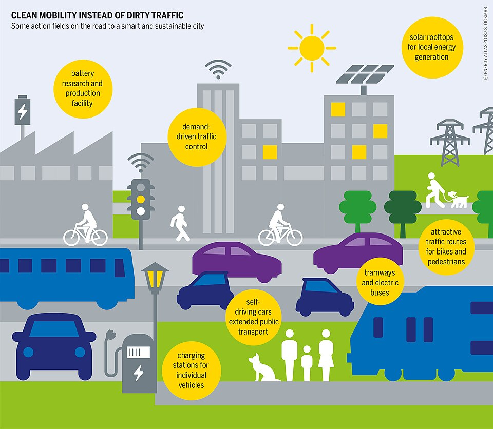

The 15-Minute City Concept
The "15-minute city" — developed by Carlos Moreno and promoted by the C40 Cities Network (funded by Bloomberg Philanthropies) — proposes that all urban residents should be able to access work, shopping, healthcare, education, and recreation within a 15-minute walk or cycle. The concept is benign on its face. Its implementation in Oxford (UK) in 2022-2024 revealed the mechanism: traffic filters divide the city into zones, with Automatic Number Plate Recognition cameras automatically fining residents who cross zone boundaries more than 100 times per year. Movement within your own city is logged, tracked, and quantitatively restricted. Oxford residents who protested were labelled "conspiracy theorists" by mainstream media — including London-based outlets that misrepresented what was actually in the council's own planning documents.
The C40 Cities network connects 96 cities representing 700 million people and 25% of global GDP. Its goals for 2030 include: zero private car ownership, zero meat consumption, zero dairy consumption, three new items of clothing per person per year, no airport access, and a limit of one "short-haul flight" every three years per person. These targets were published in a C40 "aspirational goal" document in 2019, retracted after public controversy, but remain part of internal planning documents obtained through freedom of information requests.
Following the COVID-19 response, the World Health Organization developed a Digital Health Certificate framework — effectively a global vaccine passport infrastructure. The EU's Digital COVID Certificate (the "Green Pass") was the pilot. By 2023, 51 countries had implemented WHO-compatible digital health certs. The WHO's proposed Pandemic Treaty (International Health Regulations amendments, voted on in 2024) would require member states to implement WHO-directed health responses — including vaccine certificate systems — within 48 hours of a declared emergency. The treaty gives the WHO Director General unilateral power to declare a "potential public health emergency," triggering national emergency powers in all signatory states.
Digital ID — The Convergence Point
Every component of the control system requires a unique, unforgeable identity anchor. Digital ID provides it. India's Aadhaar system — a biometric database of 1.3 billion people linked to bank accounts, phone numbers, government services, and tax records — is the model. A 2018 Reuters investigation documented that Aadhaar data was available on the dark web for less than $8, exposing over a billion identities. The system was hacked multiple times. Yet it was held up by the World Bank and WEF as the global standard to be replicated.
The UK's proposed Digital Identity and Attributes Trust Framework (being implemented 2025-2026) will create "digital identity providers" — including banks — authorised to verify identity for all online services. Once established, access to financial services, healthcare, government services, and eventually travel will require a validated digital identity. The identity provider — a bank or a government — becomes the gatekeeper to civil society. Those who are debanked, or whose credentials are revoked, are effectively excommunicated from the modern economy.
ID2020 and the Vaccine-Identity Convergence
ID2020 — a non-profit backed by Microsoft, Accenture, Gavi (Bill & Melinda Gates Foundation), the Rockefeller Foundation, and IDEO.org — was established in 2016 with the stated mission of providing "identity to all." Its 2019 Gavi partnership explicitly proposed using vaccination programmes as the vehicle for issuing digital identities — particularly to children in developing nations who lack birth certificates. The practical outcome: vaccination becomes the registration event that creates a lifelong digital identity. Those who decline vaccination would have no identity record. ID2020 received the Sustainable Development Goals 17 Award in 2018 from the United Nations.